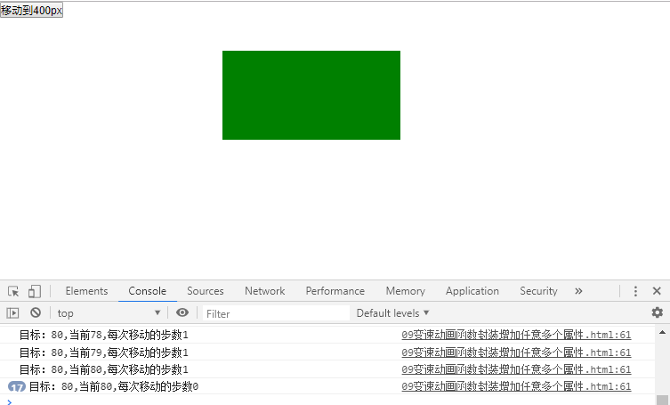

在原来缓动动画函数，增加任意一个属性的基础上，做了如下改变
1. 原来function animate(element, attr, target)，三个变量，改为用json对象来装一对：属性:目标位置的值，变为function animate(element, json)
2. 之前的变速动画函数，都任意一个属性，改变其当前属性的位置，到达目标属性。现在有多个任意属性，用json对象装，所以要遍历json对象里面每一个值 for(var key in json){}, key就是这里的attr, 所以遍历的for(var attr in json)
3. 当前属性对应的目标值，var target就是json里面值的目标，var target=json[attr];
4. 添加了flag的判断，是为了，保证在json中所有的值都到达目的位置后，再清除定时器
<!DOCTYPE html>
<html lang="en">
<head>
<meta charset="UTF-8">
<title>title</title>
<style>
* {
margin: 0;
padding: 0;
}
div {
margin-top: 30px;
width: 200px;
height: 100px;
background-color: green;
position: absolute;
left: 0;
top: 0;
}
</style>
</head>
<body>
<input type="button" value="移动到400px" id="btn1" />
<div id="dv">
</div>
<script src="common.js"></script>
<script>
//点击按钮，改变宽度到达一个目标值
//点击按钮，改变宽度到达一个目标值，高度到达一个目标值
//获取任意一个元素的任意一个属性的当前的值
function getStyle(element, attr) {
return window.getComputedStyle ? window.getComputedStyle(element, null)[attr] : element.currentSytle[attr] || 0;
}
function animate(element, json) {
clearInterval(element.timeId);
element.timeId = setInterval(function () {
var flag = true; //默认，假设，全部到达目标
for (var attr in json) {
//获取元素这个属性的当前的值
var current = parseInt(getStyle(element, attr));
//当前的属性对应的目标值
var target = json[attr];
//移动的步数
var step = (target - current) / 10;
step = step > 0 ? Math.ceil(step) : Math.floor(step);
current += step;//移动后的值
element.style[attr] = current + "px";
if (current != target) {
flag = false;
}
}
if (flag) {
clearInterval(element.timeId);
}
//测试代码
console.log("目标：" + target + ",当前" + current + ",每次移动的步数" + step);
}, 20)
}
my$("btn1").onclick = function () {
animate(my$("dv"), { "width": 400, "height": 200, "left": 500, "top": 80 })
};
</script>
</body>
</html>
效果如下：
